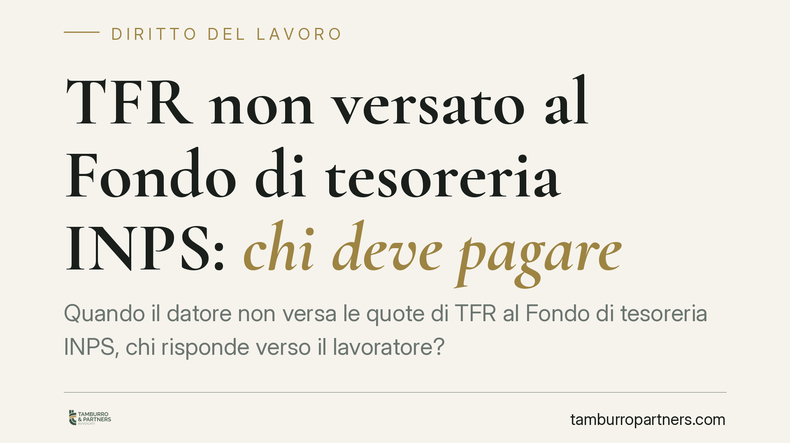

TFR non versato al Fondo di tesoreria INPS: chi deve pagare
Quando il datore non versa le quote di TFR al Fondo di tesoreria INPS, chi risponde verso il lavoratore? L'orientamento di legittimità conferma la natura retributiva del trattamento di fine rapporto anche per le quote destinate all'INPS: il datore resta obbligato e, in caso di insolvenza, interviene il Fondo di garanzia. Vediamo i profili normativi e cosa fare in concreto.

Il quadro di partenza
Il trattamento di fine rapporto (TFR) è retribuzione differita. Matura anno per anno e viene corrisposto alla cessazione del rapporto di lavoro. La sua disciplina base è contenuta nell'art. 2120 c.c., integrata dalla L. 297/1982, che ha riformato l'istituto e istituito il Fondo di garanzia presso l'INPS.
Dal 2007, per le imprese con almeno 50 addetti, le quote di TFR non destinate a forme di previdenza complementare confluiscono nel Fondo di tesoreria gestito dall'INPS (L. 296/2006, art. 1, commi 755 e seguenti). Il datore, in questi casi, non trattiene materialmente il TFR in azienda: lo versa mensilmente all'Istituto.
Da qui il problema che ricorre nella pratica: se il datore non versa quelle quote al Fondo di tesoreria, il lavoratore verso chi può pretendere il pagamento?
La natura del credito: due obblighi distinti
Il punto decisivo, confermato dalla giurisprudenza di legittimità, è che il versamento al Fondo di tesoreria non trasforma la natura del TFR. Resta retribuzione differita dovuta al lavoratore. Il meccanismo del Fondo è una modalità di gestione contabile e finanziaria, non un trasferimento del debito.
Occorre quindi tenere separati due piani:
- Obbligo contributivo verso l'INPS. Il mancato versamento delle quote al Fondo di tesoreria espone il datore alle sanzioni civili per omissione contributiva ex art. 116 L. 388/2000. È un rapporto che corre tra datore e Istituto.
- Obbligo retributivo verso il lavoratore. Il diritto del dipendente al TFR nasce e resta nei confronti del datore di lavoro, a prescindere dall'avvenuto versamento.
Ne discende una conseguenza pratica rilevante. Se le quote sono state regolarmente versate, il Fondo di tesoreria liquida direttamente la parte di sua competenza alla cessazione del rapporto. Se le quote non sono state versate, il lavoratore conserva il diritto di agire contro il datore inadempiente: l'omissione contributiva non può ricadere sul dipendente.
Il coordinamento con il Fondo di garanzia
Quando il datore è insolvente, entra in gioco il Fondo di garanzia dell'INPS (art. 2 L. 297/1982). Il Fondo interviene in via sostitutiva per il pagamento del TFR non corrisposto.
L'accesso al Fondo di garanzia presuppone, di regola, un titolo che accerti il credito e l'insolvenza del datore. In presenza di procedura concorsuale (fallimento, liquidazione giudiziale, concordato), il lavoratore deve prima insinuare il proprio credito al passivo; una volta ammesso, può presentare domanda all'INPS. In assenza di procedura concorsuale — perché l'impresa non è assoggettabile — il lavoratore deve aver esperito l'esecuzione forzata risultata infruttuosa.
Prescrizione e termini della domanda
Sul fronte dei termini, due riferimenti vanno tenuti presenti:
- Il credito per TFR si prescrive in cinque anni dalla cessazione del rapporto (art. 2948, n. 5, c.c.). È un termine che decorre indipendentemente dalle vicende contributive tra datore e INPS.
- La domanda al Fondo di garanzia va presentata all'INPS dopo l'accertamento del credito. Per l'intervento del Fondo l'Istituto corrisponde la prestazione entro sessanta giorni dalla richiesta corredata della documentazione necessaria (titolo, prova dell'insolvenza o dell'ammissione al passivo).
Il rispetto del termine quinquennale è il profilo più delicato: la pendenza di una procedura concorsuale non sospende automaticamente la prescrizione se il credito non è stato tempestivamente fatto valere.
Cosa fare in concreto
Per il lavoratore:
- Richiedere all'INPS l'estratto conto contributivo per verificare se le quote di TFR risultino effettivamente versate al Fondo di tesoreria.
- Se le quote non risultano versate, agire contro il datore con richiesta formale e, ove necessario, decreto ingiuntivo, interrompendo la prescrizione quinquennale.
- In caso di insolvenza datoriale, insinuare il credito al passivo della procedura concorsuale e, dopo l'ammissione, presentare domanda al Fondo di garanzia.
Per il datore di lavoro:
- Verificare periodicamente la regolarità dei versamenti al Fondo di tesoreria, tenendo conto delle sanzioni civili per omissione ex art. 116 L. 388/2000.
- Conservare la documentazione attestante i versamenti effettuati, utile in caso di contestazioni.
La distinzione tra piano contributivo e piano retributivo è la chiave di lettura: l'omissione verso l'INPS non estingue mai il diritto del lavoratore al TFR.
Ogni storia di lavoro ha i suoi tempi.
Se gestisci HR e vuoi un confronto su contenzioso, ispezioni o licenziamenti, scrivi allo studio. Ti rispondiamo entro un giorno lavorativo.